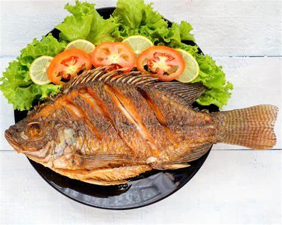

Gastronomia de tres valles
la mojarra frita
Este platillo se prepara cerniendo el pescado con sal y limón, para luego freírlo en abundante aceite caliente. La textura crujiente del exterior, combinada con la suavidad del pescado, hace de este un favorito popular.
Reloj con Javascript
Vemos aquí el reloj funcionando...

el pan dulce es una gastronomia comun en tres valles que cada cada persona consume dariamente ya que nunca falta en la casa,ya que es un alimento
basico y relativamente barato que forma parte de la dieta .